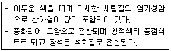

유기농업기능사 (2015-04-04 기출문제)
1과목: 작물재배
1. 작물의 일반분류에서 섬유작물(fiber crops)에 속하지 않는 것은?
- 목화, 삼
- 고리버들, 제충국
- 모시풀, 아마
- 케나프, 닥나무
(정답률: 83%)

2. 지온상승효과가 가장 우수한 멀칭필름(피복비닐)의 색은?
- 투명
- 녹색
- 흑색
- 적색
(정답률: 73%)
3. 작물의 특징에 대한 설명으로 틀린 것은?
- 이용성과 경제성이 높다.
- 일종의 기형식물을 이용하는 것이다.
- 야생식물보다 생존력이 강하고 수량성이 높다.
- 인간과 작물은 생존에 있어 공생관계를 이룬다.
(정답률: 83%)
4. 수분이 포화된 상태의 토양에서 증발을 방지 하면서 중력수를 완전히 배제하고 남은 수분 상태를 말하며, 작물이 생육하는데 가장 알맞은 수분 조건은?
- 포화용수량
- 흡습용수량
- 최대용수량
- 포장용수량
(정답률: 77%)
5. 접목재배의 특징이 아닌 것은?
- 수세회복
- 병해충 저항성 증대
- 환경 적응성 약화
- 종자번식이 어려운 작물 번식수단
(정답률: 79%)
6. 작물의 흡수와 관련된 설명 중 옳은 것은?
- 식물체의 줄기를 자른 곳에서 물이 배출되는 일비현상은 뿌리세포의 근압에 의한 능동적 흡수에 의해 일어난다.
- 능동적 흡수는 뿌리를 통해 흡수되는 물이 주로 세포벽을 통하여 집단류에 의해 뿌리 내부로 이동 하는 것을 말한다.
- 뿌리를 통한 물의 흡수경로에서 심플라스트 경로는 식물의 죽어잇는 세포벽과 세포간극을 통하여 수분이 이동되는 경로이다.
- 앞의 가장자리에 있는 수공에서 물이 나오는 일액현상은 근압에 의하여 일어나는 수동적 흡수이다.
(정답률: 50%)
7. 남부지방에서 가을에서 겨울 동안 들깨 재배시설에 야간 조명을 실시하는 이유는?
- 꽃을 피워 종자를 생산하기 위하여
- 관광객에게 볼거리를 제공하기 위하여
- 개화를 억제하여 잎을 계속 따기 위하여
- 광합성 시간을 늘려 종자 수량을 높이기 위하여
(정답률: 82%)
8. 경운의 필요성에 대한 설명으로 틀린 것은?
- 잡초 발생 억제
- 해충 발생 증가
- 토양의 물리성 개선
- 비료, 농약의 시용효과 증대
(정답률: 82%)
9. 풍해의 생리적 기구가 아닌 것은?
- 기공폐쇄
- 호흡 증가
- 광합성 저하
- 독성물질의 생성
(정답률: 70%)
10. 관개방법을 지표관개, 살수관개, 지하관개로 구분할 때 지표관계 방법에 해당하지 않는 것은?
- 일류관개
- 보더관개
- 수반법
- 스프링클러관개
(정답률: 75%)
11. 작물의 장해형 냉해에 관한 설명으로 가장 옳은 것은?
- 냉온으로 인하여 생육이 지연되어 후기등숙이 불량해진다.
- 생육초기부터 출수기에 걸쳐 냉온으로 인하여 생육이 부진하고 지연된다.
- 냉온하에서 작물의 증산작용이나 광합성이 부진하여 특정병해의 발생이 조장된다.
- 유수형성기부터 개화기까지, 특히 생식세포의 감수분열기의 냉온으로 인하여 정상적인 생식기관이 형성되지 못한다.
(정답률: 67%)
12. 작물의 재배기술 중 제초에 대한 설명으로 틀린 것은?
- 제초제는 생리작용에 따라 선택성과 비선택성으로 분류한다.
- 2,4-D(이사디)는 대표적인 비선택성 제초제이다.
- 제초제는 작용성에 따라 접촉성과 이행성으로 분류한다.
- 제초제는 잡초의 생리기능을 교란시켜 세포원형질을 파괴 또는 분리시켜 고사하게 한다.
(정답률: 74%)
13. 광합성에 조사광량이 높아도 광합성속도가 증대하지 않게 된 것을 뜻하는 것은?
- 광포화
- 보상점
- 진정광합성
- 외견상광합성
(정답률: 84%)
14. 대기의 조성과 작물의 생육에 대한 설명으로 옳은 것은?
- 대기 중 질소의 함량비는 약 79%이다.
- 대기 중 산소의 함량비는 약 46%이다.
- 콩과작물의 근류균은 혐기성세균 이다.
- 대기의 산소농도가 낮아지면 C3 작물의 광호흡이 커진다.
(정답률: 75%)
15. 발아억제물질에 해당하지 않는 것은?
- 암모니아
- 질산염
- 시안화수소
- ABA
(정답률: 55%)
16. 작물을 재배할 때 도복의 피해 양상이 아닌 것은?
- 수량감소
- 품질저하
- 수발아 방지
- 수확작업 곤란
(정답률: 82%)
17. 대기 중의 이산화탄소와 작물의 생리작용에 대한 설명으로 틀린 것은?
- 이산화탄소의 농도와 온도가 높아질수록 동화량은 증가한다.
- 광합성 속도에는 이산화탄소 농도 뿐만 아니라 광의 강도도 관계한다.
- 광합성은 온도, 광도, 이산화탄소의 농도가 증가함에 따라 계속 증대한다.
- 광합성에 의한 유기물의 생성속도와 호흡에 의한 유기물의 소모속도가 같아지는 이산화탄소 농도를 이산화탄소 보상점이라고 한다.
(정답률: 73%)
18. 적응된 유전형들이 안정 상태를 유지하려면 적응형 상호간에 유전적 교섭이 생기지 말아야 하는데, 다음 중 생리적 격리의 설명으로 옳은 것은?
- 지리적으로 멀리 떨어져 있어 유전적 교섭이 방지되는 것
- 개화기의 차이, 교잡불임 등의 원인에 의하여 유전적 교섭이 방지되는 것
- 돌연변이에 의해서 생리적으로 격리되는 것
- 생리적 특성이 강하여 유전적 교섭이 방지 되는 것
(정답률: 59%)
19. 작물의 생육에 있어 광합성에 영향을 주는 적색광의 파장은?
- 300mm
- 450mm
- 550mm
- 670mm
(정답률: 79%)
20. 대기의 질소를 고정시켜 지력을 증진시키는 작물은?
- 화곡류
- 두류
- 근채류
- 과채류
(정답률: 81%)
2과목: 토양관리
21. 일반적인 논토양에서 25℃에서의 전기전도도는 얼마인가?
- 1~2 dS/m
- 2~4 dS/m
- 5~7 dS/m
- 8~9 dS/m
(정답률: 63%)
22. 적색 또는 회색 포드졸 토양의 주요 점토광물이며, 우리나라 토양의 점토광물 중 대부분을 차지 하는 것은?
- 카울리나이트
- 일라이트
- 몬모릴로나이트
- 버미큘라이트
(정답률: 79%)
23. 우리나라 토양이 대체로 산성인 이유로 틀린 것은?
- 화강암 모재
- 여름의 많은 강우
- 산성비
- 석회 시용
(정답률: 67%)
24. 토양의 생성과 발달에 관여하는 5가지 요인에 해당하지 않는 것은?
- 모재
- 식생
- 압력
- 지형
(정답률: 62%)
25. 유효수분이 보유되어 있는 것으로서 보수역할을 주로 담당하는 공극은?
- 대공극
- 기상공극
- 모관공극
- 배수공극
(정답률: 75%)
26. 다음을 설명하는 모임음?

- 화강암
- 석회암
- 현무암
- 석영조면암
(정답률: 66%)
27. pH 2~4의 낮은 조건에서도 잘 생육하는 세균의 종류는?
- 황세균
- 질산균
- 아질산균
- 탈질균
(정답률: 67%)
28. 토양생성 요인 중 지형, 모재 및 시간 등의 영향이 뚜렷하게 나타나는 토양은?
- 성대성토양
- 간대성토양
- 무대성토양
- 열대성토양
(정답률: 53%)
29. 토양학에서 토성의 의미로 가장 적합한 것은?
- 토양의 성질
- 토양의 화학적 성질
- 입경구분에 의한 토양의 분류
- 토양반응
(정답률: 64%)
30. 에너지를 얻는 수단에 따른 분류에서 타급영양(유기영양) 세균이 아닌 것은?
- 암모니아화성균
- 섬유소분해균
- 근류균
- 질산화성균
(정답률: 34%)
31. 토양의 수분을 분류할 때 토양 수분 함량이 가장 적은 상태는
- 결합수(combined water)
- 흡습수(hygroscopic water)
- 모세관수(capillary water)
- 중력수(gravitational water)
(정답률: 59%)
32. 양이온치환용량(CEC)이 10cmol(+)/kg인 어떤 토양의 치환성염기의 합계가 6.5cmol(+)/kg라고 할 때, 이 토양의 염기포화도는?
- 13%
- 26%
- 65%
- 85%
(정답률: 79%)
33. 이따이이따이(ltai-ltai)병과 연관이 있는 중금속은?
- 피씨비(PCB)
- 카드뮴(Cd)
- 크롬(Cr)
- 셀레늄(Se)
(정답률: 87%)
34. 토양 구조의 발달에 불리하게 작용하는 요인은?
- 석회물질의 시용
- 퇴비의 시용
- 토양의 피복 관리
- 빈번한 경운
(정답률: 87%)
35. 다음 음이온 중 치환순서가 가장 빠른 이온은?
- PO43-
- SO42-
- CI-
- NO3-
(정답률: 53%)
36. 다음 중 단위 무게 당 가장 많은 양의 음전하를 함유한 광물은?
- kaolinite [카올리나이트]
- montmorillonite [몬모릴로나이트]
- illite [일라이트]
- chlorite [클로라이트]
(정답률: 53%)
37. 시설재배지 토양관리의 문제점이 아닌 것은?
- 염류집적이 잘 일어난다.
- 연작장해가 발생되기 쉽다.
- 양분용탈이 잘 일어난다.
- 양분 불균형이 발생되기 쉽다.
(정답률: 63%)
38. 우리나라 밭토양이 가장 많이 분포되어 있는 지형은?
- 곡간지
- 산악지
- 구릉지
- 평탄지
(정답률: 67%)
39. 미생물은 활성이 가장 최적인 온도에 따라서 구분할 수 잇다. 미생물의 생육적온이 15℃ 부근인 미생물은 어떤 분류에 포함되는가?
- 저온성 미생물
- 중온성 미생물
- 고온성 미생물
- 혐기성 미생물
(정답률: 62%)
40. 토양 내 유기물의 분해와 관련이 있는 효소는?
- 탈수소효소
- 인산가수분해효소
- 단백질가수분해효소
- 요소분해효소
(정답률: 34%)
3과목: 유기농업일반
41. 다음 중 연작의 피해가 가장 큰 작물은?
- 수수
- 고구마
- 양파
- 사탕무
(정답률: 63%)
42. 다음 중 산성토양에서 잘 자라는 과수는?
- 무화과나무
- 포도나무
- 감나무
- 밤나무
(정답률: 63%)
43. 유기한우 생산을 위해서는 사료 공급 요인들이 충족 되어야 한다. 유기한우 생산 충족 사항은?
- 전체 사료의 100%를 유기사료로 급여한다.
- GMO 곡물사료를 공급한다.
- 가축 질병예방을 위하여 항생제를 주기적으로 사용한다.
- 활동이 제한되는 공장식 밀식 사육을 실시한다.
(정답률: 82%)
44. 우리나라 반추가축의 유기사료 수급에 관한 문제로 부적당한 것은?
- 목초의 생산기반을 확장해야 한다.
- 유기목초 종자 및 생산기술을 수립해야 한다.
- 초지 접근성 및 유기방목 기술을 수립해야 한다.
- 조사료 보다는 농후사료의 자급기반을 확충해야 한다.
(정답률: 81%)
45. 호광성 종자는?
- 토마토
- 가지
- 상추
- 호박
(정답률: 71%)
46. 벼의 종자 증식 체계로 옳은 것은?
- 원원종 - 원종 - 기본식물 - 보급종
- 원종 - 원원종 - 기본식물 - 보급종
- 원원종 - 원종 - 보급종 - 기본식물
- 기본식물 - 원원종 - 원종 - 보급종
(정답률: 70%)
47. 유기농업에서 토양비옥도를 유지, 증대시키는 방법이 아닌 것은?
- 작물 윤작 및 간작
- 녹비 및 피복작물 재배
- 가축의 순환적 방목
- 경운작업의 최대화
(정답률: 82%)
48. 유기농업에서 벼의 병해충 방제법 중 경종적 방제법이 아닌 것은?
- 답전윤환
- 저항성 품종 이용
- 적절한 윤작
- 천적 이용
(정답률: 67%)
49. 볍씨의 종자선별 방법 중 까락이 없는 몽근메벼를 염수선할 때 가장 적당한 비중은?
- 1.03
- 1.08
- 1.10
- 1.13
(정답률: 58%)
50. 과수육종이 다른 작물에 비해 불리한 점이 아닌 것은?
- 과수는 품종육성기간이 길다.
- 과수는 넓은 재배면적이 필요하다.
- 과수는 타가수정을 한다.
- 과수는 영양번식을 한다.
(정답률: 72%)
51. 입으로 전염되며 패혈증, 설사(백리변), 독혈증의 증상을 보이는 돼지의 질병은?
- 대장균증
- 장독혈증
- 살모넬라증
- 콜레라
(정답률: 64%)
52. 다음 중 토양에 다량 사용했을 때, 질소기아 현상을 가장 심하게 나타낼 수 있는 유기물은?
- 알팔파
- 녹비
- 보릿짚
- 감자
(정답률: 57%)
53. 다음 중 농약살포의 문제점이 아닌 것은?
- 생태계가 파괴된다.
- 익충을 보호한다.
- 식품이 오염된다.
- 병해충의 저항성이 증대된다.
(정답률: 81%)
54. 유기과수원의 토양관리 중 유기물 사용의 효과가 아닌 것은?
- 토양을 홑알구조로 한다.
- 토양의 보수력을 증가한다.
- 토양의 물리성을 개선한다.
- 토양미생물이나 작물의 생육에 필요한 영양분을 공급한다.
(정답률: 82%)
55. 다음 중 식물의 기원지로 옳게 짝지어지지 않은 것은?
- 사탕수수 - 인도
- 매화 - 일본
- 가지 - 인도
- 자운영 - 중국
(정답률: 64%)
56. 농림축산식품부 소관 친환경농어업 육성 및 유기식품 등의 관리 지원에 관한 법률 시행 규칙에서 정한 친환경농산물 종류로 틀린 것은?
- 유기농산물
- 안전농산물
- 무농약농산물
- 무항생제축산물
(정답률: 79%)
57. 사과를 유기농법으로 재배하는데 어린잎 가장자리가 위쪽으로 뒤틀리고 새가지 선단에서 막 전개되는 잎은 황화되며, 심한 경우에는 새가지 정단부위가 말라죽어가고 있다. 무엇이 부족한가?
- 질소
- 인산
- 칼리
- 칼슘
(정답률: 46%)
58. 경사지에 비해 평지 과수원이 갖는 장점이라고 볼 수 없는 것은?
- 토양이 깊고 비옥하다.
- 보습력이 높다.
- 기계화가 용이하다.
- 배수가 용이하다.
(정답률: 71%)
59. 신품종 종자의 우수성이 저하되는 품종퇴화의 원인이 아닌 것은?
- 인공적
- 유전적
- 생리적
- 병리적
(정답률: 72%)
60. 유기농업에서 소각(burning)을 권장하지 않는 이유로 틀린 것은?
- 소각함으로써 익충과 토양생물체에 피해를 준다.
- 많은 양의 탄소, 질소 그리고 황이 가스형태로 손실된다.
- 소각후에 잡초나 병충해가 더 많이 나타난다.
- 재가 함유하고 있는 양분은 빗물에 쉽게 씻겨 유실된다.
(정답률: 69%)